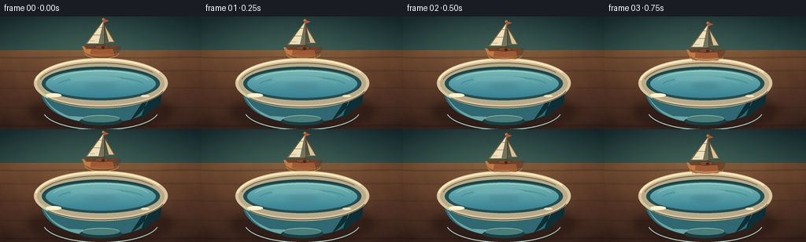
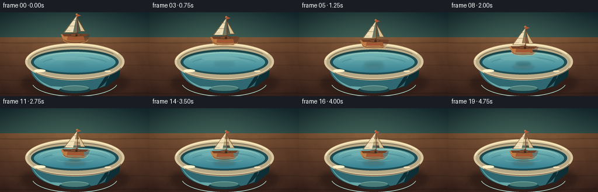

CODING AGENTS AS PIXEL WORLD MODELS
traex/DeepSeek-V4.1-Flash · mechanics_0010
点击播放 · 原生 RGB 像素
逐轮保存的候选
回放视频、检查图与代码变化。
每份候选均可单独播放。实际图片检查记录在下方工具轨迹中。
候选 01播放与检查图
点击播放 · 原生 RGB 像素


展开代码变化
--- 上一保存版本
+++ 本次保存版本
@@ -0,0 +1,335 @@
+"""Render a wooden toy boat being gently placed into a small bowl of water."""
+
+from pathlib import Path
+
+import numpy as np
+from PIL import Image, ImageDraw, ImageFilter
+
+import artifact_io
+
+
+CASE_DIR = Path(__file__).resolve().parent
+W, H = 256, 144
+SS = 4
+RW, RH = W * SS, H * SS
+N, FPS = 20, 4
+
+
+def sc(value):
+ return int(round(value * SS))
+
+
+def box(x0, y0, x1, y1):
+ return (sc(x0), sc(y0), sc(x1), sc(y1))
+
+
+def rgba(hex_color, alpha=255):
+ value = hex_color.lstrip("#")
+ return tuple(int(value[i : i + 2], 16) for i in (0, 2, 4)) + (alpha,)
+
+
+def cubic(p0, p1, p2, p3, steps=28):
+ points = []
+ for t in np.linspace(0.0, 1.0, steps):
+ u = 1.0 - t
+ points.append(
+ (
+ u**3 * p0[0] + 3 * u * u * t * p1[0] + 3 * u * t * t * p2[0] + t**3 * p3[0],
+ u**3 * p0[1] + 3 * u * u * t * p1[1] + 3 * u * t * t * p2[1] + t**3 * p3[1],
+ )
+ )
+ return points
+
+
+def make_background():
+ """Build the quiet wall and warm tabletop at output resolution."""
+ yy, xx = np.mgrid[0:H, 0:W].astype(np.float32)
+ image = np.zeros((H, W, 3), dtype=np.float32)
+
+ horizon = 43.0
+ wall_t = np.clip(yy / horizon, 0.0, 1.0)
+ wall_top = np.array([19, 43, 51], dtype=np.float32)
+ wall_bottom = np.array([45, 75, 72], dtype=np.float32)
+ wall = wall_top[None, None, :] * (1 - wall_t[..., None]) + wall_bottom[None, None, :] * wall_t[..., None]
+ image[:] = wall
+
+ table_t = np.clip((yy - horizon) / (H - horizon), 0.0, 1.0)
+ table_top = np.array([119, 76, 49], dtype=np.float32)
+ table_bottom = np.array([67, 41, 33], dtype=np.float32)
+ table = table_top[None, None, :] * (1 - table_t[..., None]) + table_bottom[None, None, :] * table_t[..., None]
+ table_mask = yy >= horizon
+ image[table_mask] = table[table_mask]
+
+ # Directional window light and a soft pool behind the bowl.
+ glow = np.exp(-(((xx - 112.0) / 112.0) ** 2 + ((yy - 17.0) / 55.0) ** 2))
+ image += glow[..., None] * np.array([22, 25, 16], dtype=np.float32)
+
+ grain = (
+ 2.4 * np.sin(xx * 0.075 + np.sin(yy * 0.13) * 1.8)
+ + 1.4 * np.sin(xx * 0.021 + yy * 0.17)
+ + 0.9 * np.sin(xx * 0.31 - yy * 0.08)
+ )
+ image += (grain * table_mask)[..., None] * np.array([1.0, 0.66, 0.42], dtype=np.float32)
+
+ # Broad, slightly irregular plank seams.
+ for seam_y, darkness in ((52, 0.18), (69, 0.12), (91, 0.10), (116, 0.11), (139, 0.17)):
+ seam = np.exp(-((yy - (seam_y + 0.5 * np.sin(xx * 0.045))) / 1.0) ** 2)
+ image *= (1.0 - darkness * seam)[..., None]
+
+ # Subtle grain pores, strongest near the lower foreground.
+ rng = np.random.default_rng(171)
+ speckle = rng.normal(0.0, 1.0, (H // 2, W // 2)).astype(np.float32)
+ speckle = np.asarray(
+ Image.fromarray(((speckle - speckle.min()) / (np.ptp(speckle) + 1e-6) * 255).astype(np.uint8))
+ .resize((W, H), Image.Resampling.BICUBIC)
+ .filter(ImageFilter.GaussianBlur(0.35))
+ ).astype(np.float32)
+ image += ((speckle - 128.0) / 128.0)[..., None] * 3.0 * table_mask[..., None]
+
+ # Gentle vignette keeps the action at the center.
+ vx = (xx - W * 0.5) / (W * 0.58)
+ vy = (yy - H * 0.50) / (H * 0.64)
+ vignette = np.clip(1.0 - 0.20 * (vx * vx + vy * vy), 0.76, 1.0)
+ image *= vignette[..., None]
+
+ return Image.fromarray(np.clip(image, 0, 255).astype(np.uint8), "RGB").resize(
+ (RW, RH), Image.Resampling.BICUBIC
+ ).convert("RGBA")
+
+
+def add_bowl(image):
+ """Composite the bowl and the calm water surface."""
+ draw = ImageDraw.Draw(image, "RGBA")
+
+ # Soft contact shadow beneath the ceramic foot.
+ shadow = Image.new("RGBA", (RW, RH), (0, 0, 0, 0))
+ sd = ImageDraw.Draw(shadow, "RGBA")
+ sd.ellipse(box(35, 103, 221, 141), fill=(35, 20, 17, 145))
+ sd.ellipse(box(66, 119, 190, 141), fill=(23, 16, 16, 110))
+ shadow = shadow.filter(ImageFilter.GaussianBlur(sc(5.2)))
+ image.alpha_composite(shadow)
+
+ # Glazed bowl body, drawn as a broad curved vessel.
+ body = [(50, 83), (52, 98)]
+ body += cubic((52, 98), (57, 124), (91, 136), (128, 136), 32)
+ body += cubic((128, 136), (166, 136), (200, 124), (205, 98), 32)
+ body += [(207, 83)]
+ draw.polygon([(sc(x), sc(y)) for x, y in body], fill=rgba("#2f6870"))
+
+ # The left face catches the window light; the right curls into shadow.
+ left_face = [(52, 89)]
+ left_face += cubic((52, 89), (55, 116), (79, 132), (111, 135), 24)
+ left_face += [(105, 128)]
+ left_face += list(reversed(cubic((52, 89), (54, 106), (66, 119), (87, 127), 20)))
+ draw.polygon([(sc(x), sc(y)) for x, y in left_face], fill=(104, 166, 166, 70))
+
+ right_face = [(178, 131), (204, 111), (207, 84), (193, 91)]
+ right_face += list(reversed(cubic((193, 91), (190, 109), (183, 122), (166, 132), 20)))
+ draw.polygon([(sc(x), sc(y)) for x, y in right_face], fill=(13, 46, 52, 82))
+
+ # A slim pale glaze line follows the bowl's shoulder.
+ draw.arc(box(54, 94, 202, 145), 13, 167, fill=(166, 211, 200, 82), width=sc(1.15))
+
+ # Foot ring and its shadow.
+ draw.ellipse(box(101, 128, 155, 139), fill=rgba("#173d44"))
+ draw.ellipse(box(104, 126, 152, 135), fill=rgba("#497b78"))
+ draw.arc(box(104, 126, 152, 135), 188, 350, fill=(155, 196, 177, 110), width=sc(0.8))
+
+ # Cream rim with a dark inner well.
+ draw.ellipse(box(43, 53, 213, 117), fill=rgba("#d7c59d"))
+ draw.ellipse(box(47, 58, 209, 113), fill=rgba("#b8aa88"))
+ draw.ellipse(box(53, 64, 203, 107), fill=rgba("#214d52"))
+
+ # Water gradient, masked to the elliptical liquid surface.
+ wx0, wy0, wx1, wy1 = 58, 68, 198, 104
+ ww, wh = wx1 - wx0, wy1 - wy0
+ y = np.linspace(0.0, 1.0, wh * SS, dtype=np.float32)[:, None, None]
+ top = np.array([121, 187, 185], dtype=np.float32)
+ bottom = np.array([54, 128, 145], dtype=np.float32)
+ water_arr = np.repeat(top[None, None, :] * (1 - y) + bottom[None, None, :] * y, ww * SS, axis=1)
+ water_arr = np.repeat(water_arr, 1, axis=0)
+ water_im = Image.fromarray(np.clip(water_arr, 0, 255).astype(np.uint8), "RGB").convert("RGBA")
+ water_mask = Image.new("L", (ww * SS, wh * SS), 0)
+ ImageDraw.Draw(water_mask).ellipse((0, 0, ww * SS - 1, wh * SS - 1), fill=255)
+ water_im.putalpha(water_mask)
+ image.alpha_composite(water_im, (sc(wx0), sc(wy0)))
+
+ # Liquid depth, far-shore reflection, and two calm bands.
+ water_layer = Image.new("RGBA", (RW, RH), (0, 0, 0, 0))
+ wd = ImageDraw.Draw(water_layer, "RGBA")
+ wd.arc(box(65, 69, 191, 102), 197, 344, fill=(221, 228, 191, 95), width=sc(1.2))
+ wd.arc(box(70, 76, 186, 103), 199, 341, fill=(44, 103, 118, 75), width=sc(2.0))
+ wd.arc(box(81, 79, 175, 102), 201, 339, fill=(204, 230, 209, 44), width=sc(0.75))
+ wd.ellipse(box(89, 76, 154, 83), fill=(220, 238, 216, 20))
+ water_clip = Image.new("L", (RW, RH), 0)
+ ImageDraw.Draw(water_clip).ellipse(box(wx0, wy0, wx1, wy1), fill=255)
+ water_layer.putalpha(Image.composite(water_layer.getchannel("A"), Image.new("L", (RW, RH), 0), water_clip))
+ image.alpha_composite(water_layer)
+
+ # Rim highlights sit above the water.
+ draw = ImageDraw.Draw(image, "RGBA")
+ draw.arc(box(44, 54, 212, 116), 187, 333, fill=(250, 232, 187, 225), width=sc(2.25))
+ draw.arc(box(49, 59, 207, 112), 192, 327, fill=(112, 94, 69, 85), width=sc(1.1))
+ draw.arc(box(54, 65, 202, 106), 194, 326, fill=(18, 58, 61, 165), width=sc(1.0))
+ draw.arc(box(46, 61, 210, 116), 15, 145, fill=(85, 72, 58, 95), width=sc(1.1))
+
+ # Two tiny glaze glints on the near-left rim.
+ draw.ellipse(box(58, 98, 78, 103), fill=(255, 242, 202, 135))
+ draw.ellipse(box(179, 100, 190, 103), fill=(244, 225, 184, 76))
+ return image
+
+
+def make_toy():
+ """Draw the carved wooden sailboat once; it is rotated per frame."""
+ canvas_w, canvas_h = 82, 82
+ toy = Image.new("RGBA", (canvas_w * SS, canvas_h * SS), (0, 0, 0, 0))
+ d = ImageDraw.Draw(toy, "RGBA")
+ ox, oy = 41, 40
+
+ def p(x, y):
+ return (sc(ox + x), sc(oy + y))
+
+ # Mast and tiny finial.
+ d.rounded_rectangle((sc(ox + 2.1), sc(oy - 36), sc(ox + 4.5), sc(oy + 1)), radius=sc(1.0), fill=rgba("#5b3522"))
+ d.ellipse((sc(ox + 1.6), sc(oy - 38), sc(ox + 5.0), sc(oy - 34.6)), fill=rgba("#b9783c"))
+
+ # Main ivory sail, with a warm shaded lee side and stitched seams.
+ sail = [p(3.4, -35.0), p(-18.5, -5.5), p(3.4, -5.5)]
+ d.polygon(sail, fill=rgba("#efdfb9"))
+ d.polygon([p(3.4, -35.0), p(3.4, -5.5), p(-3.0, -5.5)], fill=(199, 172, 126, 95))
+ d.line([p(3.4, -35.0), p(-18.5, -5.5), p(3.4, -5.5), p(3.4, -35.0)], fill=rgba("#9b7548"), width=sc(0.8))
+ d.line([p(-12.3, -16.4), p(3.4, -16.4)], fill=(154, 118, 73, 125), width=sc(0.55))
+ d.line([p(-6.7, -26.3), p(3.4, -26.3)], fill=(154, 118, 73, 115), width=sc(0.55))
+ d.line([p(-14.2, -9.0), p(-7.4, -9.0)], fill=(246, 235, 200, 115), width=sc(0.55))
+
+ # A smaller rear sail gives the tiny boat a readable silhouette.
+ d.polygon([p(5.1, -27.8), p(17.3, -7.5), p(5.1, -7.5)], fill=rgba("#d8c294"))
+ d.polygon([p(5.1, -27.8), p(5.1, -7.5), p(10.0, -7.5)], fill=(129, 95, 56, 75))
+ d.line([p(5.1, -27.8), p(17.3, -7.5), p(5.1, -7.5)], fill=rgba("#8d663c"), width=sc(0.65))
+
+ # Rope and a small coral pennant.
+ d.line([p(3.5, -35.2), p(-17.5, -6.0)], fill=(112, 72, 43, 145), width=sc(0.45))
+ d.line([p(3.5, -35.2), p(16.8, -8.0)], fill=(112, 72, 43, 125), width=sc(0.45))
+ d.polygon([p(4.1, -37.0), p(10.4, -34.5), p(4.1, -32.3)], fill=rgba("#b55339"))
+
+ # Carved wooden hull: broad deck, rounded stern, and a pointed bow.
+ hull = [p(-24, -2.0), p(-20.5, 5.8), p(-16.5, 11.5), p(15.5, 11.5), p(23.2, 5.0), p(26.0, -2.0)]
+ d.polygon(hull, fill=rgba("#9b5b32"))
+ d.polygon([p(-24, -2.0), p(-20.5, 5.8), p(-13.5, 8.6), p(-12.0, -2.0)], fill=rgba("#bd7b45"))
+ d.polygon([p(14.5, -2.0), p(17.5, 10.3), p(23.2, 5.0), p(26.0, -2.0)], fill=(91, 46, 28, 100))
+ d.polygon([p(-21.5, -2.7), p(23.2, -2.7), p(18.7, 1.2), p(-18.5, 1.2)], fill=rgba("#704027"))
+ d.arc((sc(ox - 20.5), sc(oy - 0.7), sc(ox + 23.0), sc(oy + 14.0)), 4, 176, fill=(239, 178, 103, 145), width=sc(0.9))
+
+ # Grain and painted stripe follow the hull curvature.
+ d.arc((sc(ox - 18), sc(oy + 1.8), sc(ox + 21), sc(oy + 10.5)), 9, 170, fill=(225, 159, 87, 115), width=sc(0.65))
+ d.arc((sc(ox - 17), sc(oy + 4.2), sc(ox + 18), sc(oy + 12.0)), 10, 169, fill=(86, 43, 27, 95), width=sc(0.6))
+ d.line([p(-13.0, 5.5), p(13.5, 5.5)], fill=rgba("#b34e38"), width=sc(1.15))
+ d.line([p(-12.0, 8.0), p(11.5, 8.0)], fill=(245, 188, 111, 75), width=sc(0.45))
+
+ # Deck opening and mast base.
+ d.ellipse((sc(ox - 8.7), sc(oy - 3.8), sc(ox + 10.5), sc(oy + 1.7)), fill=rgba("#573421"))
+ d.ellipse((sc(ox - 7.5), sc(oy - 3.1), sc(ox + 9.2), sc(oy + 1.0)), fill=rgba("#7e4a2c"))
+ d.ellipse((sc(ox + 0.8), sc(oy - 2.3), sc(ox + 5.0), sc(oy + 1.3)), fill=rgba("#3d2c22"))
+
+ return toy
+
+
+def add_water_shadow_and_ripples(image, toy_y, frame, toy):
+ """Add the projected shadow, waterline, and gentle expanding rings."""
+ contact = float(np.clip((toy_y - 40.0) / 32.0, 0.0, 1.0))
+ layer = Image.new("RGBA", (RW, RH), (0, 0, 0, 0))
+ d = ImageDraw.Draw(layer, "RGBA")
+
+ # A broad shadow becomes tighter as the hull approaches the water.
+ width = 38.0 - 18.0 * contact
+ height = 9.0 - 4.0 * contact
+ alpha = int(24 + 78 * contact)
+ d.ellipse(box(128 - width / 2, 88.2 - height / 2, 128 + width / 2, 88.2 + height / 2), fill=(22, 75, 79, alpha))
+ layer = layer.filter(ImageFilter.GaussianBlur(sc(2.8 - 1.4 * contact)))
+
+ # Gentle rings begin at contact and fade while spreading across the bowl.
+ for origin, strength in ((9.2, 1.0), (12.6, 0.48), (15.9, 0.24)):
+ age = frame - origin
+ if age < 0:
+ continue
+ radius = 10.0 + 7.3 * age
+ fade = strength * np.exp(-age / 4.8)
+ ring_alpha = int(100 * fade)
+ if ring_alpha < 4:
+ continue
+ rx, ry = radius, radius * 0.27
+ d.ellipse(box(128 - rx, 88.5 - ry, 128 + rx, 88.5 + ry), outline=(213, 238, 217, ring_alpha), width=sc(0.85))
+ if age < 1.2:
+ d.ellipse(
+ box(128 - rx * 0.72, 88.5 - ry * 0.65, 128 + rx * 0.72, 88.5 + ry * 0.65),
+ outline=(240, 245, 219, int(ring_alpha * 0.55)),
+ width=sc(0.55),
+ )
+
+ water_clip = Image.new("L", (RW, RH), 0)
+ ImageDraw.Draw(water_clip).ellipse(box(58, 68, 198, 104), fill=255)
+ layer.putalpha(Image.composite(layer.getchannel("A"), Image.new("L", (RW, RH), 0), water_clip))
+ image.alpha_composite(layer)
+
+ # The lower hull enters the water after contact, with a small translucent
+ # foreground wash that keeps the toy visibly floating rather than pasted on.
+ if frame >= 10:
+ waterline = Image.new("RGBA", (RW, RH), (0, 0, 0, 0))
+ wd = ImageDraw.Draw(waterline, "RGBA")
+ waterline_y = 87.4 + 0.9 * np.sin((frame - 10) * 0.75)
+ wd.ellipse(
+ box(98, waterline_y - 2.1, 158, waterline_y + 4.6),
+ fill=(73, 148, 155, 92),
+ )
+ wd.arc(box(97, waterline_y - 2.8, 159, waterline_y + 4.7), 7, 173, fill=(221, 239, 218, 72), width=sc(0.7))
+ wl_clip = Image.new("L", (RW, RH), 0)
+ ImageDraw.Draw(wl_clip).ellipse(box(58, 68, 198, 104), fill=255)
+ waterline.putalpha(Image.composite(waterline.getchannel("A"), Image.new("L", (RW, RH), 0), wl_clip))
+ image.alpha_composite(waterline)
+
+
+def toy_position(frame):
+ # Ease from a visible hover to first contact around frame 10.
+ descend = [40.0, 41.2, 42.7, 44.6, 47.0, 49.8, 53.1, 56.9, 61.2, 66.0, 70.7, 73.3]
+ settle = [74.6, 75.4, 75.8, 75.9, 75.7, 75.4, 75.2, 75.3, 75.5]
+ y = descend[frame] if frame < len(descend) else settle[frame - len(descend)]
+ angle = [0.0, 0.0, 0.0, 0.0, 0.0, 0.0, 0.0, 0.0, -0.2, -0.5, -0.9, -1.1,
+ 0.9, 1.15, 0.75, -0.55, 0.35, -0.22, 0.12, -0.08][frame]
+ return y, angle
+
+
+def render_frame(frame, background, toy):
+ image = background.copy()
+ image = add_bowl(image)
+ toy_y, angle = toy_position(frame)
+ add_water_shadow_and_ripples(image, toy_y, frame, toy)
+
+ rotated = toy.rotate(angle, resample=Image.Resampling.BICUBIC, center=(41 * SS, 40 * SS))
+ image.alpha_composite(rotated, (sc(128 - 41), sc(toy_y - 40)))
+
+ # A faint, warm reflection directly below the floating hull.
+ contact = float(np.clip((toy_y - 40.0) / 32.0, 0.0, 1.0))
+ if contact > 0.15:
+ reflection = Image.new("RGBA", (RW, RH), (0, 0, 0, 0))
+ rd = ImageDraw.Draw(reflection, "RGBA")
+ alpha = int(20 + 38 * contact)
+ rd.ellipse(box(109, 89.5, 147, 98.5), fill=(87, 52, 31, alpha))
+ reflection = reflection.filter(ImageFilter.GaussianBlur(sc(2.2)))
+ clip = Image.new("L", (RW, RH), 0)
+ ImageDraw.Draw(clip).ellipse(box(58, 68, 198, 104), fill=255)
+ reflection.putalpha(Image.composite(reflection.getchannel("A"), Image.new("L", (RW, RH), 0), clip))
+ image.alpha_composite(reflection)
+
+ return image.convert("RGB").resize((W, H), Image.Resampling.LANCZOS)
+
+
+def main():
+ background = make_background()
+ toy = make_toy()
+ frames = np.stack([np.asarray(render_frame(i, background, toy), dtype=np.uint8) for i in range(N)])
+ artifact_io.save(frames, CASE_DIR)
+ print(f"Saved {N} frames at {W}x{H}, {FPS} fps to {CASE_DIR}")
+
+
+if __name__ == "__main__":
+ main()
候选 02播放与检查图
点击播放 · 原生 RGB 像素

展开代码变化
--- 上一保存版本
+++ 本次保存版本
@@ -248,7 +248,7 @@
layer = layer.filter(ImageFilter.GaussianBlur(sc(2.8 - 1.4 * contact)))
# Gentle rings begin at contact and fade while spreading across the bowl.
- for origin, strength in ((9.2, 1.0), (12.6, 0.48), (15.9, 0.24)):
+ for origin, strength in ((12.4, 1.0), (15.4, 0.48), (18.1, 0.24)):
age = frame - origin
if age < 0:
continue
@@ -273,10 +273,10 @@
# The lower hull enters the water after contact, with a small translucent
# foreground wash that keeps the toy visibly floating rather than pasted on.
- if frame >= 10:
+ if frame >= 12:
waterline = Image.new("RGBA", (RW, RH), (0, 0, 0, 0))
wd = ImageDraw.Draw(waterline, "RGBA")
- waterline_y = 87.4 + 0.9 * np.sin((frame - 10) * 0.75)
+ waterline_y = 87.4 + 0.9 * np.sin((frame - 12) * 0.75)
wd.ellipse(
box(98, waterline_y - 2.1, 158, waterline_y + 4.6),
fill=(73, 148, 155, 92),
候选 03播放与检查图
点击播放 · 原生 RGB 像素

展开代码变化
代码未变化；重新保存了产物。
候选 04播放与检查图
可观测工具轨迹
实际执行的命令与返回图片。
命令 1exit 0
/bin/bash -c "pwd && rg --files -g 'prompt.txt' -g 'GENERATION_RULES.md' -g 'task_spec.json' -g '"'!**/.git/**'"'"
命令 2exit 0
/bin/bash -c 'ls -la'
命令 3exit 0
/bin/bash -c 'cat prompt.txt'
命令 4exit 0
/bin/bash -c 'cat GENERATION_RULES.md'
命令 5exit 0
/bin/bash -c 'cat task_spec.json'
命令 6exit 0
/bin/bash -c "sed -n '1,240p' artifact_io.py"
命令 7exit 0
/bin/bash -c "sed -n '1,220p' player_template.html"
命令 8exit 0
/bin/bash -c "python - <<'PY'
import sys, numpy, PIL
print(sys.version)
print('numpy', numpy.__version__)
print('PIL', PIL.__version__)
PY"命令 9exit 0
/bin/bash -c "python - <<'PY'
from PIL import Image
print('PIL ok', Image.__version__)
try:
import scipy; print('scipy', scipy.__version__)
except Exception as e: print('no scipy', e)
PY"命令 10exit 0
/bin/bash -c 'command -v chafa || command -v viu || command -v jp2 || command -v img2txt || true'
命令 11exit 0
/bin/bash -c 'python generate.py'
命令 12exit 0
/bin/bash -c "python - <<'PY'
from PIL import Image
import numpy as np
for name in ['inspection.png','transition_check.png']:
im=np.array(Image.open(name).convert('RGB'))
print(name, im.shape, 'mean', im.mean((0,1)).round(1), 'std', im.std((0,1)).round(1))
for i in [0,5,9,10,11,14,19]:
im=np.array(Image.open(f'frames/{i:02d}.png').convert('RGB'))
# toy-ish dark/reddish region upper center, waterish cyan center
print(i, 'center', im[35:90,95:165].mean((0,1)).round(1), 'water', im[76:96,75:180].mean((0,1)).round(1))
PY"命令 13exit 0
/bin/bash -c "python - <<'PY'
from PIL import Image
# 8x enlarged frames for local visual inspection (the saved video itself remains 256x144)
ims=[Image.open(f'frames/{i:02d}.png').resize((1024,576),Image.Resampling.NEAREST) for i in range(20)]
for idx,start in enumerate([0,5,10,15]):
out=Image.new('RGB',(1024,576*4))
for j,im in enumerate(ims[start:start+4]): out.paste(im,(0,576*j))
out.save(f'.tmp/check_{idx}.png')
PY
ls -lh frames/00.png frames/10.png frames/19.png inspection.png"命令 14exit 0
/bin/bash -c "python - <<'PY'
from PIL import Image
import numpy as np
im=np.array(Image.open('frames/19.png').convert('RGB'))
# Coarse 16x9 color/light map. Characters: dark .:-=+*#%@ bright
lum=(im[...,0]*.2126+im[...,1]*.7152+im[...,2]*.0722)
chars=' .:-=+*#%@'
h,w=lum.shape
for y in range(0,h,8):
row=''
for x in range(0,w,8):
v=lum[y:y+8,x:x+8].mean()
row+=chars[min(9,int(v/256*10))]
print(row)
# Bounding boxes of saturated coral/orange toy colors
mask=(im[...,0]>im[...,2]*1.3)&(im[...,0]>90)&(im[...,1]<im[...,0]*.9)
ys,xs=np.where(mask)
print('warm bbox', (xs.min(),ys.min(),xs.max(),ys.max()) if len(xs) else None, 'count', len(xs))
PY"命令 15exit 0
/bin/bash -c "python - <<'PY'
from PIL import Image
im=Image.open('.tmp/check_2.png')
# crop around the bowl at full display size
im.crop((250,180,775,610)).save('.tmp/contact.png')
PY"命令 16exit 0
/bin/bash -c 'python generate.py'
命令 17exit 1
/bin/bash -c "python - <<'PY'
from pathlib import Path
import json, re, base64
import numpy as np
from PIL import Image
case = Path('.')
spec = json.loads((case/'task_spec.json').read_text())
npz = np.load(case/'pixels.npz')
pixels = npz['pixels']
assert pixels.shape == (20, 144, 256), pixels.shape
assert pixels.dtype == np.uint8
files = sorted((case/'frames').glob('*.png'))
assert len(files) == 20, len(files)
for i, path in enumerate(files):
im = Image.open(path)
assert im.size == (256, 144), (path, im.size)
assert im.mode == 'RGB', (path, im.mode)
# Decode the player payload and verify first frame and delta chain lengths.
html = (case/'index.html').read_text()
match = re.search(r'const DATA=(\\{.*?\\}),W=', html)
assert match
data = json.loads(match.group(1))
assert (data['width'], data['height'], data['frames'], data['fps']) == (256, 144, 20, 4.0)
assert len(data['deltas']) == 19
first = np.frombuffer(base64.b64decode(data['first']), dtype='<u4')
assert first.size == 256 * 144
# Every step should contain motion; contact frames should add water-surface change.
frame_diff = np.abs(np.diff(pixels.astype(np.int16), axis=0))
changes = (frame_diff > 2).any(axis=3).sum(axis=(1,2))
assert np.all(changes > 0), changes
for a, b in [(0,1),(4,5),(9,10),(11,12),(12,13),(16,17),(18,19)]:
print(f'{a:02d}->{b:02d}: changed pixels={changes[a]:4d}, mean abs diff={frame_diff[a].mean():.3f}')
print('pixels:', pixels.shape, pixels.dtype)
print('frames:', len(files), 'RGB 256x144')
print('player deltas:', len(data['deltas']), 'first payload pixels:', first.size)
print('inspection:', Image.open(case/'inspection.png').size, 'transition:', Image.open(case/'transition_check.png').size)
PY"命令 18exit 1
/bin/bash -c "python - <<'PY'
from pathlib import Path
import json, re, base64
import numpy as np
from PIL import Image
case = Path('.')
npz = np.load(case/'pixels.npz')
packed = npz['pixels']
assert packed.shape == (144, 256, 20), packed.shape
assert packed.dtype == np.uint8
files = sorted((case/'frames').glob('*.png'))
assert len(files) == 20, len(files)
frames = []
for i, path in enumerate(files):
im = Image.open(path)
assert im.size == (256, 144), (path, im.size)
assert im.mode == 'RGB', (path, im.mode)
frames.append(np.asarray(im))
frames = np.stack(frames)
html = (case/'index.html').read_text()
match = re.search(r'const DATA=(\\{.*?\\}),W=', html)
assert match
data = json.loads(match.group(1))
assert (data['width'], data['height'], data['frames'], data['fps']) == (256, 144, 20, 4.0)
assert len(data['deltas']) == 19
first = np.frombuffer(base64.b64decode(data['first']), dtype='<u4')
assert first.size == 256 * 144
# Decode the delta chain exactly as the player does and compare with PNGs.
decoded = [first.copy()]
for encoded in data['deltas']:
current = decoded[-1].copy()
packet = np.frombuffer(base64.b64decode(encoded), dtype='<u4')
i = 0
while i < len(packet):
start, count = int(packet[i]), int(packet[i+1])
current[start:start+count] = packet[i+2:i+2+count]
i += 2 + count
decoded.append(current)
decoded = np.stack(decoded).reshape(20, 144, 256)
expected = (frames[...,0].astype(np.uint32)<<16)|(frames[...,1].astype(np.uint32)<<8)|frames[...,2]
assert np.array_equal(decoded, expected)
assert np.array_equal(packed, expected.transpose(1,2,0))
frame_diff = np.abs(np.diff(frames.astype(np.int16), axis=0))
changes = (frame_diff > 2).any(axis=3).sum(axis=(1,2))
assert np.all(changes > 0), changes
for a in [0,4,9,11,12,16,18]:
print(f'{a:02d}->{a+1:02d}: changed pixels={changes[a]:4d}, mean abs diff={frame_diff[a].mean():.3f}')
print('pixels.npz:', packed.shape, packed.dtype)
print('frames:', len(files), 'RGB 256x144')
print('player delta chain: 20 frames, exact pixel match')
print('inspection:', Image.open(case/'inspection.png').size, 'transition:', Image.open(case/'transition_check.png').size)
PY"命令 19exit 0
/bin/bash -c "python - <<'PY'
from pathlib import Path
import numpy as np
from PIL import Image
npz=np.load('pixels.npz')
for k in npz.files: print(k, npz[k].shape, npz[k].dtype)
files=sorted(Path('frames').glob('*.png'))
print('count',len(files))
for i,p in enumerate(files):
im=Image.open(p)
print(i,p.name,im.size,im.mode) if i<2 or i>17 else None
PY"命令 20exit 0
/bin/bash -c "python - <<'PY'
from pathlib import Path
import json, re, base64
import numpy as np
from PIL import Image
case = Path('.')
packed = np.load(case/'pixels.npz')['pixels']
assert packed.shape == (144, 256, 20), packed.shape
assert packed.dtype == np.uint32, packed.dtype
files = sorted((case/'frames').glob('*.png'))
assert len(files) == 20, len(files)
frames = []
for i, path in enumerate(files):
im = Image.open(path)
assert im.size == (256, 144), (path, im.size)
assert im.mode == 'RGB', (path, im.mode)
frames.append(np.asarray(im))
frames = np.stack(frames)
html = (case/'index.html').read_text()
match = re.search(r'const DATA=(\\{.*?\\}),W=', html)
assert match
data = json.loads(match.group(1))
assert (data['width'], data['height'], data['frames'], data['fps']) == (256, 144, 20, 4.0)
assert len(data['deltas']) == 19
first = np.frombuffer(base64.b64decode(data['first']), dtype='<u4')
assert first.size == 256 * 144
decoded = [first.copy()]
for encoded in data['deltas']:
current = decoded[-1].copy()
packet = np.frombuffer(base64.b64decode(encoded), dtype='<u4')
i = 0
while i < len(packet):
start, count = int(packet[i]), int(packet[i+1])
current[start:start+count] = packet[i+2:i+2+count]
i += 2 + count
decoded.append(current)
decoded = np.stack(decoded).reshape(20, 144, 256)
expected = (frames[...,0].astype(np.uint32)<<16)|(frames[...,1].astype(np.uint32)<<8)|frames[...,2]
assert np.array_equal(decoded, expected)
assert np.array_equal(packed, expected.transpose(1,2,0))
frame_diff = np.abs(np.diff(frames.astype(np.int16), axis=0))
changes = (frame_diff > 2).any(axis=3).sum(axis=(1,2))
assert np.all(changes > 0), changes
for a in [0,4,9,11,12,16,18]:
print(f'{a:02d}->{a+1:02d}: changed pixels={changes[a]:4d}, mean abs diff={frame_diff[a].mean():.3f}')
print('pixels.npz:', packed.shape, packed.dtype)
print('frames:', len(files), 'RGB 256x144')
print('player delta chain: 20 frames, exact pixel match')
print('inspection:', Image.open(case/'inspection.png').size, 'transition:', Image.open(case/'transition_check.png').size)
PY"命令 21exit 0
/bin/bash -c "python - <<'PY'
from PIL import Image
import numpy as np
# Report the toy's approximate occupied region and palette for the final inspection.
for idx in [0, 8, 12, 19]:
a=np.array(Image.open(f'frames/{idx:02d}.png').convert('RGB'))
# Warm, high-chroma pixels above the bowl's waterline.
m=(a[...,0] > a[...,2]*1.28) & (a[...,0] > 80) & (a[...,1] < 135)
ys,xs=np.where(m)
print(idx, 'warm toy pixels', len(xs), 'bbox', (xs.min(),ys.min(),xs.max(),ys.max()) if len(xs) else None)
PY"保存候选 4 份；完成命令 21 次；可验证图片返回 0 张。原始 API 响应与完整日志保留在本地。